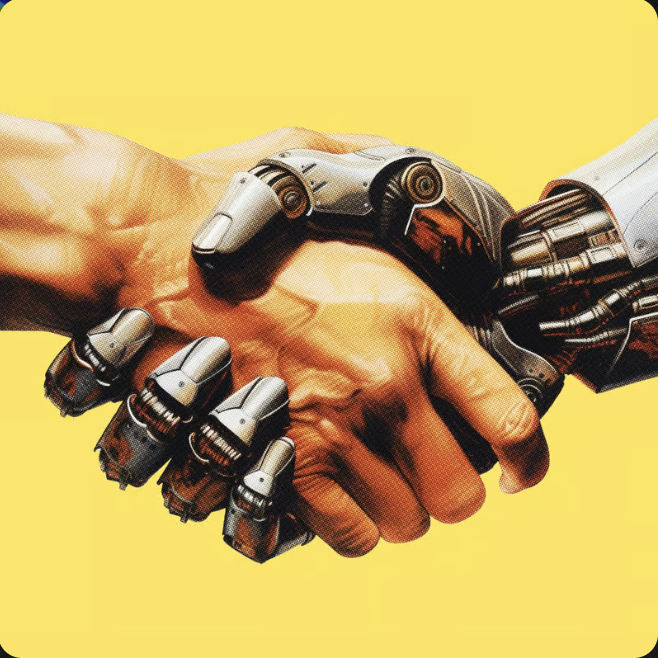

The full Claw ecosystem — OpenClaw, NanoClaw, MicroClaw, PicoClaw, ZeroClaw, ExoClaw. Secured by FrawdBot. Powered by Qwen-Agent. Interfaced through Claude Code Slack. On your hardware, not ours.

Enterprises want AI agents but lack the infrastructure to run them securely at scale. Internal teams don't have the SRE expertise for production agent deployments.
OpenClaw and 40,000+ agent platforms are production-ready. Edge compute on customer hardware makes deployment affordable. The entire stack is open source.
Without proper infrastructure, agents become security liabilities and compliance gaps. Prompt injection, data exfiltration, and insider threats at machine velocity.
Six runtimes. One managed infrastructure. The right agent for every deployment.
The flagship. Full-featured enterprise agent with 50+ integrations, plugin system, and department-specific loadouts.
Containerized, security-first. Runs on Anthropic's Agent SDK with isolated containers for every tool execution.
Shared agent engine with provider abstraction, durable session state, and layered memory across every chat platform.
Ultra-lightweight. Built by Sipeed to run on $10 RISC-V boards, IP cameras, routers, and microcontrollers.
Sub-10ms startup. Under 5MB RAM at runtime. 22 AI provider support. Zero dependency overhead.
Managed hosting with WASM-sandboxed tool execution. Real-time monitoring, team workspaces, 100+ AgentSkills.
Three layers from human conversation to machine execution.
Teams interact through natural Slack conversations. @mention Claude with a task, get progress updates in threads, create PRs directly. Already powering enterprise workflows at Netflix, Spotify, Salesforce. The human-agent boundary.
Self-hosted reasoning with Qwen3.5 models. MCP support, function calling, code interpreter via Docker sandbox, RAG, and multi-agent orchestration. Air-gapped inference — customer data never leaves customer hardware.
Six open-source runtimes matched to deployment requirements. OpenClaw for enterprise, PicoClaw for IoT, ZeroClaw for minimal footprint, NanoClaw for containerized security, MicroClaw for multi-channel, ExoClaw for managed cloud. All secured by FrawdBot. All monitored by Organized AI.
Open source at every layer. Managed infrastructure underneath.
Featured entries from our field guide to the models and runtimes behind the Claw stack. View all →
From unboxing to production in 6–12 hours.
Three tiers. One infrastructure philosophy. Your hardware.
Run AI agent teams like a company — with org structures, budgets, and Slack as the control plane. Choose your deployment.
Engineering documentation from real deployments and production conversations.
A field guide to the large language models that power the agent era. Vendor, lineage, context windows, and where each model fits in a production stack.
Infrastructure consultancy for the agent era.
Organized AI is an infrastructure consultancy specializing in AI agent deployment. We partner with Self-Improving Code (Colin McNamara) for enterprise-grade architecture and FrawdBot for insider threat detection.
We don't build agents. We build the infrastructure that makes agents production-ready — the SRE dashboards, the caching layers, the API gateways, the security monitoring, the edge deployments. The boring stuff that makes the exciting stuff work.
Your Mac Mini, your office, your network, your data. Edge compute beats cloud for AI agent workloads — lower latency, better economics, full data sovereignty.
OpenClaw, Qwen-Agent, CrewAI, AutoGen — we don't care which framework you choose. 40,000+ options exist. The infrastructure underneath is the same.
FrawdBot behavioral analysis is bundled in every deployment. Not an upsell. 21,000 lines of detection engine monitoring for insider threats at machine velocity.
Tell us about your infrastructure needs.
30-minute consultation to scope your deployment.
[ Calendly Embed ]
Open Scheduling →Under 24 hours for qualified inquiries.